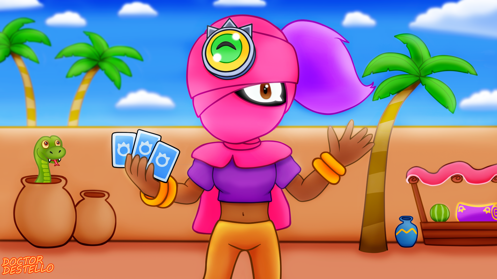
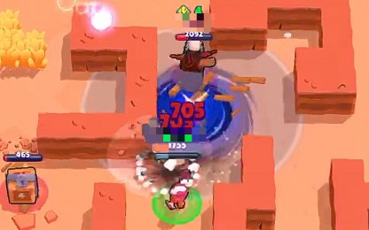

Tara
Acerca

Este es una luchadora cuyas habiliades son muy para zonear o robar en algunos casos, este es complicado de usar a primera vista, porque en el competivo no es muy fácil que te topes con personas que no saben "guardar su distancia".
| Stat | Descripción |
|---|---|
| Vida | 6.200 |
| Velocidad de movimiento | Normal |
| Daño | 3 x 960 |
| Rango de ataque | Largo |
| Velocidad de recarga | Lenta |
La pasiva de este personaje es lanzar un como un remolino que atraera al centro a todos los enemigos que estén en su rango impidiendoles atacar y rompiendo pasivas.
| Daño | 1.600 |
| Rango | Normal |

Sus power stars y gadgets son unicos para este perosnaje:
| Power Star | Descripción | Gadget | Descripción |
|---|---|---|---|
| Black portal | La pasiva crea una sombra que atacará al enemigo más cercano. | Phychic enhancer | Tara puede ver a todos los enemigos econdidos en el mapa, durante 4 segundos. |
| Healing shade | La pasiva crea una sombra que curará al aliado más cercano y con menos vida. | Support form beyond | tara invoca 3 sombras de ella a su alrededor que perseguirán al enemigo más cercano y desaparecerán después de 6 segundos. |
Abajo se ve una demostración del barwler en acción.